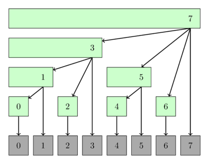

Cây Fenwick¶
Gọi $f$ là một phép toán nhóm nào đó (một hàm hai ngôi có tính kết hợp trên một tập, có phần tử đơn vị và các phần tử nghịch đảo), và $A$ là một mảng số nguyên có độ dài $N$. Ký hiệu phép toán $f$ dưới dạng trung tố là $*$; tức là $f(x,y) = x*y$ với mọi số nguyên $x,y$. (Vì phép toán có tính kết hợp, khi dùng ký hiệu trung tố ta sẽ bỏ ngoặc biểu diễn thứ tự áp dụng của $f$.)
Cây Fenwick là một cấu trúc dữ liệu có thể:
- tính giá trị của hàm $f$ trên đoạn $[l, r]$ cho trước (tức $A_l * A_{l+1} * \dots * A_r$) trong $O(\log N)$ thời gian
- cập nhật giá trị của một phần tử trong $A$ trong $O(\log N)$ thời gian
- dùng $O(N)$ bộ nhớ (bằng lượng bộ nhớ cần cho $A$)
- dễ sử dụng và cài đặt, đặc biệt với mảng nhiều chiều
Ứng dụng phổ biến nhất của cây Fenwick là tính tổng trên một đoạn. Ví dụ, nếu dùng phép cộng trên tập số nguyên làm phép toán nhóm, tức $f(x,y) = x + y$, thì phép toán $*$ lúc này là $+$, nên $A_l * A_{l+1} * \dots * A_r = A_l + A_{l+1} + \dots + A_{r}$.
Cây Fenwick còn được gọi là Binary Indexed Tree (BIT, cây chỉ số nhị phân). Cấu trúc này lần đầu được mô tả trong bài báo "A new data structure for cumulative frequency tables" (Peter M. Fenwick, 1994).
Mô tả¶
Tổng quan¶
Để đơn giản, ta giả sử hàm $f$ được định nghĩa là $f(x,y) = x + y$ trên tập số nguyên.
Giả sử ta có một mảng số nguyên $A[0 \dots N-1]$. (Lưu ý rằng ở đây ta đánh chỉ số từ 0.) Cây Fenwick thực chất chỉ là một mảng $T[0 \dots N-1]$, trong đó mỗi phần tử bằng tổng các phần tử của $A$ trên một đoạn nào đó $[g(i), i]$:
trong đó $g$ là một hàm thỏa $0 \le g(i) \le i$. Ta sẽ định nghĩa $g$ trong vài đoạn tiếp theo.
Cấu trúc dữ liệu này được gọi là một cây vì có thể biểu diễn nó đẹp mắt dưới dạng cây, dù ta không cần mô hình hóa một cây thực sự bằng các đỉnh và cạnh. Ta chỉ cần duy trì mảng $T$ để xử lý mọi truy vấn.
Lưu ý: Cây Fenwick trình bày ở đây dùng chỉ số từ 0. Nhiều người dùng phiên bản cây Fenwick đánh chỉ số từ 1. Vì vậy, ở phần cài đặt bạn cũng sẽ thấy một cách cài đặt thay thế dùng chỉ số từ 1. Hai phiên bản tương đương về độ phức tạp thời gian và bộ nhớ.
Giờ ta có thể viết giả mã cho hai thao tác đã nêu. Bên dưới, ta lấy tổng các phần tử của $A$ trên đoạn $[0, r]$ và cập nhật (tăng) một phần tử $A_i$:
def sum(int r):
res = 0
while (r >= 0):
res += t[r]
r = g(r) - 1
return res
def increase(int i, int delta):
for all j with g(j) <= i <= j:
t[j] += delta
Hàm sum hoạt động như sau:
- Trước tiên, nó cộng tổng của đoạn $[g(r), r]$ (tức $T[r]$) vào
result. - Sau đó, nó "nhảy" tới đoạn $[g(g(r)-1), g(r)-1]$ và cộng tổng của đoạn này vào
result. - Quá trình tiếp tục cho đến khi nó "nhảy" từ $[0, g(g( \dots g(r)-1 \dots -1)-1)]$ sang $[g(-1), -1]$; tại đây hàm
sumdừng việc nhảy.
Hàm increase hoạt động tương tự nhưng "nhảy" theo chiều chỉ số tăng dần:
- Tổng của mỗi đoạn có dạng $[g(j), j]$ thỏa điều kiện $g(j) \le i \le j$ được tăng thêm
delta; tức làt[j] += delta. Do đó, nó cập nhật mọi phần tử trong $T$ tương ứng với những đoạn chứa $A_i$.
Độ phức tạp của cả sum và increase phụ thuộc vào hàm $g$.
Có nhiều cách chọn hàm $g$ sao cho $0 \le g(i) \le i$ với mọi $i$.
Chẳng hạn, hàm $g(i) = i$ là hợp lệ và cho $T = A$ (khi đó các truy vấn tính tổng sẽ chậm).
Ta cũng có thể chọn $g(i) = 0$.
Trường hợp này tương ứng với mảng tổng tiền tố (khi đó tìm tổng trên đoạn $[0, i]$ chỉ mất thời gian hằng số, nhưng cập nhật lại chậm).
Điểm khéo léo của cây Fenwick nằm ở cách định nghĩa đặc biệt hàm $g$ để xử lý cả hai thao tác trong $O(\log N)$ thời gian.
Định nghĩa $g(i)$¶
Ta tính $g(i)$ bằng thao tác đơn giản sau: thay mọi bit $1$ ở cuối biểu diễn nhị phân của $i$ bằng bit $0$.
Nói cách khác, nếu bit thấp nhất của $i$ trong biểu diễn nhị phân là $0$ thì $g(i) = i$. Nếu bit thấp nhất là $1$, ta lật bit $1$ này cùng tất cả các bit $1$ liên tiếp ở cuối.
Ví dụ:
Ta có một cách cài đặt đơn giản bằng phép toán bit cho thao tác không tầm thường vừa mô tả:
trong đó $\&$ là phép AND theo bit. Không khó để tự kiểm tra rằng công thức này thực hiện đúng thao tác ở trên.
Giờ ta chỉ cần tìm cách duyệt mọi $j$ sao cho $g(j) \le i \le j$.
Có thể thấy ta tìm được mọi $j$ như vậy bằng cách bắt đầu từ $i$ rồi bật bit $0$ cuối cùng thành $1$. Ta gọi thao tác này là $h(j)$. Ví dụ, với $i = 10$ ta có:
Không bất ngờ khi $h$ cũng có một cách tính đơn giản bằng phép toán bit:
trong đó $|$ là phép OR theo bit.
Hình sau minh họa một cách nhìn cây Fenwick dưới dạng cây. Các đỉnh của cây biểu diễn những đoạn mà chúng quản lý.

Cài đặt¶
Tính tổng trong mảng một chiều¶
Dưới đây là cài đặt cây Fenwick cho truy vấn tổng và cập nhật tại một điểm.
Cây Fenwick thông thường chỉ trả lời trực tiếp truy vấn tổng dạng $[0, r]$ bằng sum(int r), nhưng ta cũng có thể trả lời truy vấn dạng $[l, r]$ bằng cách tính hai tổng $[0, r]$ và $[0, l-1]$ rồi lấy hiệu.
Điều này được xử lý trong phương thức sum(int l, int r).
Cài đặt này cũng hỗ trợ hai constructor. Ta có thể tạo một cây Fenwick ban đầu toàn số 0, hoặc chuyển một mảng có sẵn sang dạng Fenwick.
struct FenwickTree {
vector<int> bit; // binary indexed tree
int n;
FenwickTree(int n) {
this->n = n;
bit.assign(n, 0);
}
FenwickTree(vector<int> const &a) : FenwickTree(a.size()) {
for (size_t i = 0; i < a.size(); i++)
add(i, a[i]);
}
int sum(int r) {
int ret = 0;
for (; r >= 0; r = (r & (r + 1)) - 1)
ret += bit[r];
return ret;
}
int sum(int l, int r) {
return sum(r) - sum(l - 1);
}
void add(int idx, int delta) {
for (; idx < n; idx = idx | (idx + 1))
bit[idx] += delta;
}
};
Xây dựng tuyến tính¶
Cài đặt phía trên cần $O(N \log N)$ thời gian. Ta có thể cải thiện xuống $O(N)$.
Ý tưởng là số $a[i]$ tại chỉ số $i$ sẽ đóng góp vào đoạn được lưu trong $bit[i]$, và vào mọi đoạn mà chỉ số $i | (i + 1)$ đóng góp tới. Vì vậy, khi cộng các số theo thứ tự, ta chỉ cần đẩy tổng hiện tại sang đoạn tiếp theo; từ đó nó lại tiếp tục được đẩy sang đoạn kế tiếp, và cứ như vậy.
FenwickTree(vector<int> const &a) : FenwickTree(a.size()){
for (int i = 0; i < n; i++) {
bit[i] += a[i];
int r = i | (i + 1);
if (r < n) bit[r] += bit[i];
}
}
Tìm giá trị nhỏ nhất trên $[0, r]$ trong mảng một chiều¶
Rõ ràng không có cách đơn giản để tìm giá trị nhỏ nhất trên đoạn $[l, r]$ bằng cây Fenwick, vì cây Fenwick chỉ có thể trả lời truy vấn dạng $[0, r]$.
Ngoài ra, mỗi khi một giá trị được update, giá trị mới phải nhỏ hơn giá trị hiện tại.
Hai hạn chế đáng kể này xuất phát từ việc phép $min$ trên tập số nguyên không tạo thành một nhóm, vì không có phần tử nghịch đảo.
struct FenwickTreeMin {
vector<int> bit;
int n;
const int INF = (int)1e9;
FenwickTreeMin(int n) {
this->n = n;
bit.assign(n, INF);
}
FenwickTreeMin(vector<int> a) : FenwickTreeMin(a.size()) {
for (size_t i = 0; i < a.size(); i++)
update(i, a[i]);
}
int getmin(int r) {
int ret = INF;
for (; r >= 0; r = (r & (r + 1)) - 1)
ret = min(ret, bit[r]);
return ret;
}
void update(int idx, int val) {
for (; idx < n; idx = idx | (idx + 1))
bit[idx] = min(bit[idx], val);
}
};
Lưu ý: có thể cài đặt một cây Fenwick hỗ trợ truy vấn giá trị nhỏ nhất trên đoạn bất kỳ và cập nhật bất kỳ. Bài báo Efficient Range Minimum Queries using Binary Indexed Trees mô tả một cách làm như vậy. Tuy nhiên, với cách này ta phải duy trì thêm một cây chỉ số nhị phân thứ hai trên dữ liệu, có cấu trúc hơi khác, vì một cây không đủ để lưu giá trị của mọi phần tử trong mảng. Cài đặt cũng phức tạp hơn nhiều so với phiên bản thông thường cho tổng.
Tính tổng trong mảng hai chiều¶
Như đã nói, cây Fenwick cho mảng nhiều chiều rất dễ cài đặt.
struct FenwickTree2D {
vector<vector<int>> bit;
int n, m;
// init(...) { ... }
int sum(int x, int y) {
int ret = 0;
for (int i = x; i >= 0; i = (i & (i + 1)) - 1)
for (int j = y; j >= 0; j = (j & (j + 1)) - 1)
ret += bit[i][j];
return ret;
}
void add(int x, int y, int delta) {
for (int i = x; i < n; i = i | (i + 1))
for (int j = y; j < m; j = j | (j + 1))
bit[i][j] += delta;
}
};
Cách đánh chỉ số từ 1¶
Với cách này, ta thay đổi một chút yêu cầu và định nghĩa của $T[]$ và $g()$. Ta muốn $T[i]$ lưu tổng trên $[g(i)+1; i]$. Điều này làm cài đặt thay đổi đôi chút và cho ta một định nghĩa đẹp tương tự của $g(i)$:
def sum(int r):
res = 0
while (r > 0):
res += t[r]
r = g(r)
return res
def increase(int i, int delta):
for all j with g(j) < i <= j:
t[j] += delta
Ta định nghĩa việc tính $g(i)$ là: lật bit $1$ cuối cùng trong biểu diễn nhị phân của $i$.
Có thể tách bit $1$ cuối cùng bằng $i ~\&~ (-i)$, nên thao tác được viết thành:
Và không khó để thấy rằng khi muốn cập nhật $A[j]$, ta cần thay đổi mọi giá trị $T[j]$ trong dãy $i,~ h(i),~ h(h(i)),~ \dots$, trong đó $h(i)$ được định nghĩa là:
Có thể thấy ưu điểm chính của cách này là hai phép toán bit bổ trợ cho nhau rất đẹp.
Cài đặt sau có thể dùng giống các cài đặt trước, nhưng bên trong nó đánh chỉ số từ 1.
struct FenwickTreeOneBasedIndexing {
vector<int> bit; // binary indexed tree
int n;
FenwickTreeOneBasedIndexing(int n) {
this->n = n + 1;
bit.assign(n + 1, 0);
}
FenwickTreeOneBasedIndexing(vector<int> a)
: FenwickTreeOneBasedIndexing(a.size()) {
for (size_t i = 0; i < a.size(); i++)
add(i, a[i]);
}
int sum(int idx) {
int ret = 0;
for (++idx; idx > 0; idx -= idx & -idx)
ret += bit[idx];
return ret;
}
int sum(int l, int r) {
return sum(r) - sum(l - 1);
}
void add(int idx, int delta) {
for (++idx; idx < n; idx += idx & -idx)
bit[idx] += delta;
}
};
Các thao tác trên đoạn¶
Cây Fenwick có thể hỗ trợ các kiểu thao tác trên đoạn sau:
- Cập nhật điểm và truy vấn đoạn
- Cập nhật đoạn và truy vấn điểm
- Cập nhật đoạn và truy vấn đoạn
1. Cập nhật điểm và truy vấn đoạn¶
Đây chính là cây Fenwick thông thường đã trình bày ở trên.
2. Cập nhật đoạn và truy vấn điểm¶
Bằng một vài mẹo đơn giản, ta cũng có thể làm theo chiều ngược lại: tăng giá trị cả đoạn và truy vấn một giá trị đơn lẻ.
Giả sử cây Fenwick ban đầu toàn số 0.
Ta muốn tăng mọi phần tử trong đoạn $[l, r]$ thêm $x$.
Ta thực hiện hai phép cập nhật điểm trên cây Fenwick: add(l, x) và add(r+1, -x).
Nếu muốn lấy giá trị của $A[i]$, ta chỉ cần lấy tổng tiền tố bằng cách tính tổng đoạn thông thường. Để thấy vì sao điều này đúng, hãy xét lại phép tăng vừa nêu. Nếu $i < l$, hai phép cập nhật không ảnh hưởng đến truy vấn và ta nhận tổng $0$. Nếu $i \in [l, r]$, ta nhận đáp án $x$ nhờ phép cập nhật thứ nhất. Còn nếu $i > r$, phép cập nhật thứ hai sẽ triệt tiêu tác dụng của phép đầu tiên.
Cài đặt sau dùng chỉ số từ 1.
void add(int idx, int val) {
for (++idx; idx < n; idx += idx & -idx)
bit[idx] += val;
}
void range_add(int l, int r, int val) {
add(l, val);
add(r + 1, -val);
}
int point_query(int idx) {
int ret = 0;
for (++idx; idx > 0; idx -= idx & -idx)
ret += bit[idx];
return ret;
}
Lưu ý: tất nhiên ta cũng có thể tăng riêng một điểm $A[i]$ bằng range_add(i, i, val).
3. Cập nhật đoạn và truy vấn đoạn¶
Để hỗ trợ đồng thời cập nhật đoạn và truy vấn đoạn, ta dùng hai BIT là $B_1[]$ và $B_2[]$, ban đầu đều bằng 0.
Giả sử ta muốn tăng đoạn $[l, r]$ thêm giá trị $x$.
Tương tự cách trước, ta thực hiện hai cập nhật điểm trên $B_1$: add(B1, l, x) và add(B1, r+1, -x).
Ta cũng cập nhật $B_2$. Chi tiết sẽ được giải thích sau.
def range_add(l, r, x):
add(B1, l, x)
add(B1, r+1, -x)
add(B2, l, x*(l-1))
add(B2, r+1, -x*r))
Ghi chú bản dịch: Khối giả mã nguồn ngay phía trên có thừa một dấu ngoặc đóng ở lời gọi cập nhật cuối cùng. Bản dịch giữ nguyên mã nguồn theo quy tắc đồng bộ.
Sau phép cập nhật đoạn $(l, r, x)$, truy vấn tổng đoạn phải trả về các giá trị sau:
Ta có thể viết tổng đoạn dưới dạng hiệu của hai hạng, trong đó dùng $B_1$ cho hạng thứ nhất và $B_2$ cho hạng thứ hai. Hiệu hai truy vấn sẽ cho tổng tiền tố trên $[0, i]$.
Biểu thức cuối cùng đúng bằng các hạng cần có. Vì vậy ta có thể dùng $B_2$ để loại phần thừa khi nhân $B_1[i]\times i$.
Ta tìm được tổng của đoạn bất kỳ bằng cách tính tổng tiền tố tại $l-1$ và $r$, rồi lại lấy hiệu.
def add(b, idx, x):
while idx <= N:
b[idx] += x
idx += idx & -idx
def range_add(l,r,x):
add(B1, l, x)
add(B1, r+1, -x)
add(B2, l, x*(l-1))
add(B2, r+1, -x*r)
def sum(b, idx):
total = 0
while idx > 0:
total += b[idx]
idx -= idx & -idx
return total
def prefix_sum(idx):
return sum(B1, idx)*idx - sum(B2, idx)
def range_sum(l, r):
return prefix_sum(r) - prefix_sum(l-1)
Bài tập luyện tập¶
- UVA 12086 - Potentiometers
- LOJ 1112 - Curious Robin Hood
- LOJ 1266 - Points in Rectangle
- Codechef - SPREAD
- SPOJ - CTRICK
- SPOJ - MATSUM
- SPOJ - DQUERY
- SPOJ - NKTEAM
- SPOJ - YODANESS
- SRM 310 - FloatingMedian
- SPOJ - Ada and Behives
- Hackerearth - Counting in Byteland
- DevSkill - Shan and String (archived)
- Codeforces - Little Artem and Time Machine
- Codeforces - Hanoi Factory
- SPOJ - Tulip and Numbers
- SPOJ - SUMSUM
- SPOJ - Sabir and Gifts
- SPOJ - The Permutation Game Again
- SPOJ - Zig when you Zag
- SPOJ - Cryon
- SPOJ - Weird Points
- SPOJ - Its a Murder
- SPOJ - Bored of Suffixes and Prefixes
- SPOJ - Mega Inversions
- Codeforces - Subsequences
- Codeforces - Ball
- GYM - The Kamphaeng Phet's Chedis
- Codeforces - Garlands
- Codeforces - Inversions after Shuffle
- GYM - Cairo Market
- Codeforces - Goodbye Souvenir
- SPOJ - Ada and Species
- Codeforces - Thor
- CSES - Forest Queries II
- Latin American Regionals 2017 - Fundraising